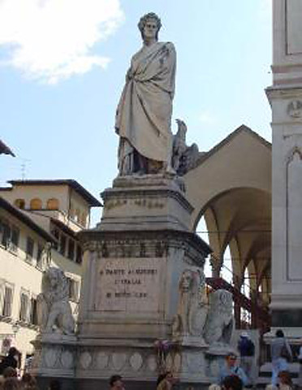

Johnnie and Oberta Baker's Photo Album Previous Gallery Next
|

Dante Alighieri was an Italian political philsoopher, musician, poet, and playwright. Dante was exiled from Florence, his birthplace. In July, 2008, the city of Florence lifted the exile sentence which had been made because Dante stayed in Rome and didn't come back to Florence after a revolution took place there. |